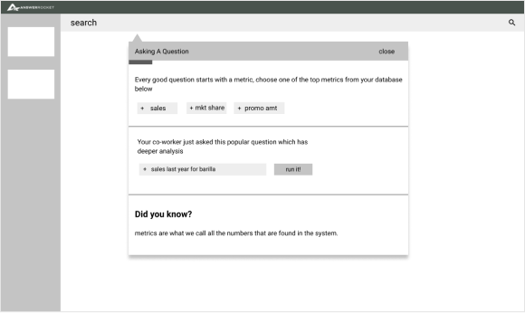

AnswerRocket is an AI-driven data analytics platform that enables users to ask natural language questions about their data and interact with the results. In this project, we employed user research and prototyping to identify key challenges data analysts faced when searching and analyzing their data. Our goal was to explore more effective solutions to improve this process.
As the Senior Designer on the project, I was responsible for developing a comprehensive design plan and process that incorporated upfront user research within a constrained timeline.
Chris Gillis - Sr UI/UX Designer
UX Designer
Head of Product
Product Manager
A key challenge for the product team was that development consistently outpaced design, necessitating the creation of a design process that effectively integrated with the sprint cycle.
Collaborated with the product and development teams to incorporate user research and upfront design time into the sprint cycles.

We commenced by collaborating with our services team to identify and engage customers who aligned with our target personas. Additionally, we reviewed customer interviews conducted by the services team over the past year. Our Product Manager also analyzed previous video sessions to uncover user challenges. Through this research, we identified several new key insights:
I explored the concept of incorporating guided task completion and onboarding to enhance users' familiarity with their data and search functionality. This exploration led to the development of 'Missions'.
Missions are structured mini-onboarding sessions designed to teach users about specific, complex features of the application through guided tasks. Our aim was to employ this approach to effectively guide users through the process.
The user flows were instrumental in conveying our vision for Missions to stakeholders. Based on insights from user interviews, we recognized the value of educating users on optimal navigation within AnswerRocket.
We opted to use low-fidelity wireframes to facilitate early feedback and iterative improvements before ever finalizing the design. By testing these wireframes with 22 users, we aimed to gain initial insights and secure stakeholder approval to proceed with the design project. This early feedback was crucial for validating the concept. Below you are seeing some of the Mission wireframes.
We were progressing rapidly and determined that MAZE remote usability testing would be the most effective approach. We set up a low fidelity prototype and implemented a plan to gather user feedback on our proposed solution. View the Prototype
Did you understand the question that you crafted?
47% of users had a great experience
48% of users had a moderate experience
6% of users had a poor experience
What do you believe is the most beneficial portion of helping you build your question?
Patterns: “Quick Tags” mentioned 7 times out of 13 testers
What do you think is missing from the experience?
Categories and Filtering - Many users thought they were going to be typing natural language
What is your reaction to the user instructions throughout the screens?
59% of users had a great experience
30% of users had a moderate experience
12% of users had a poor experience
We gained valuable insights into Natural Language search throughout this process. By transitioning from user interviews to testing proposed solutions, we identified several user frustrations. This research proved instrumental when we later developed a similar product offering.
The design process was well-received and remains in use within the organization. Product managers provided feedback, noting favorable aspects while suggesting minor adjustments for future sprints. Additionally, we learned the importance of involving the Services team earlier in the process